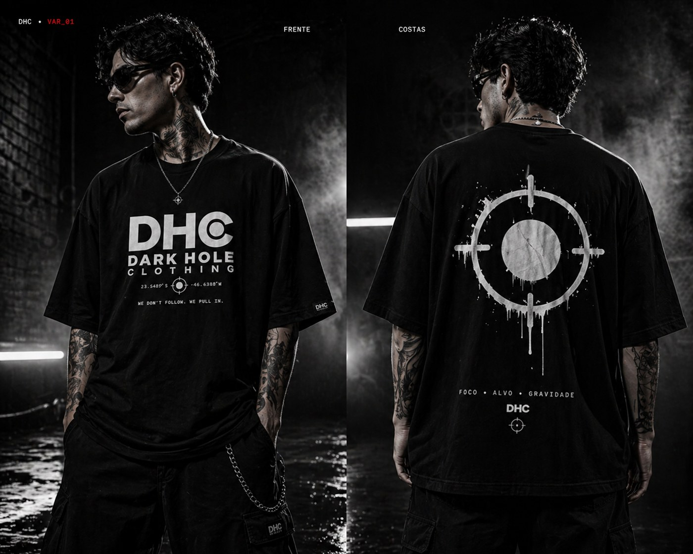
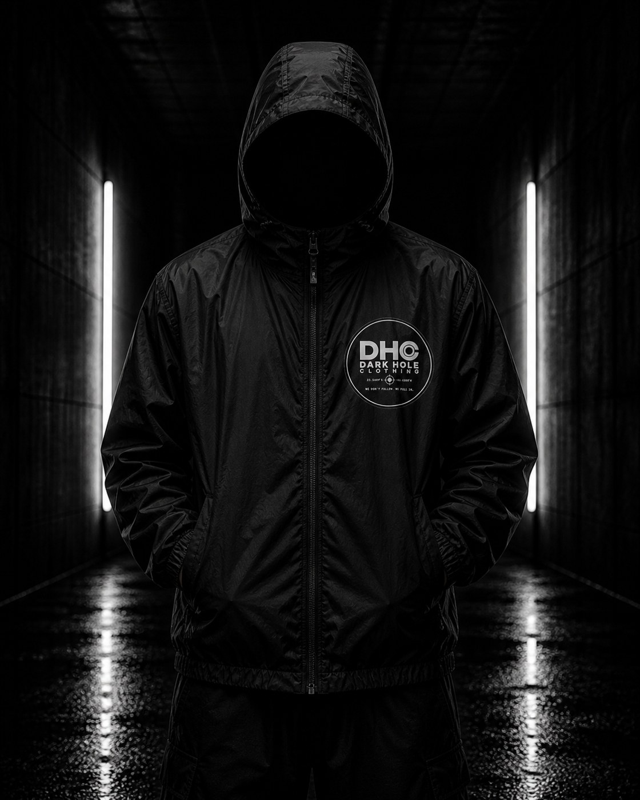
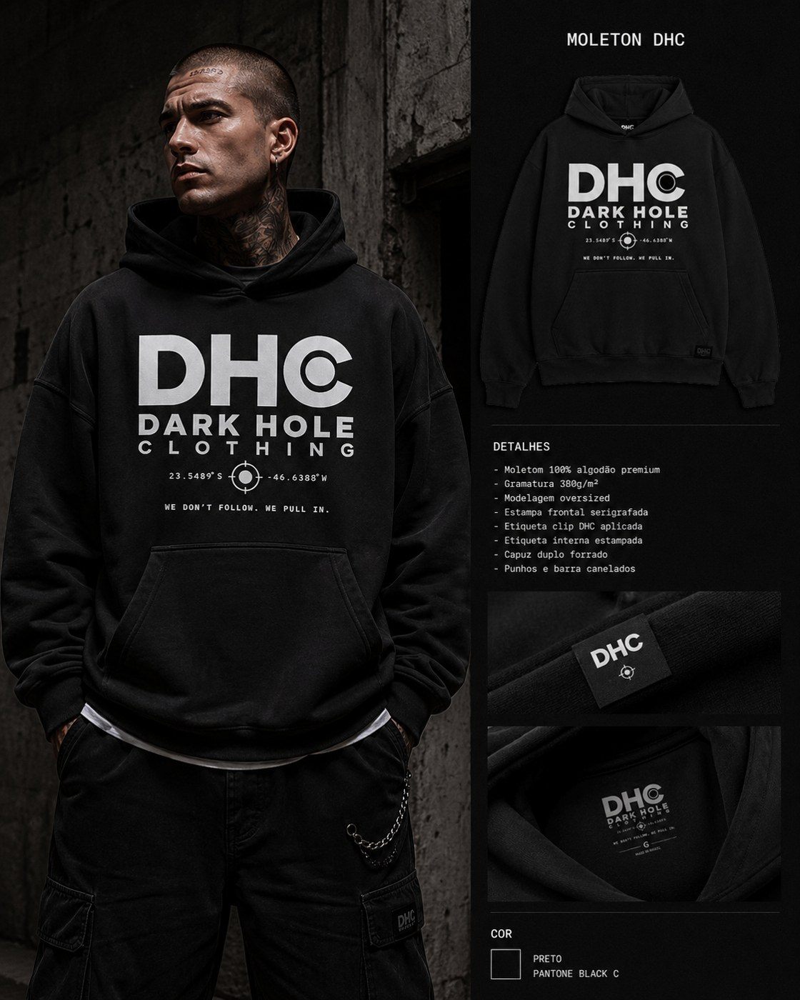
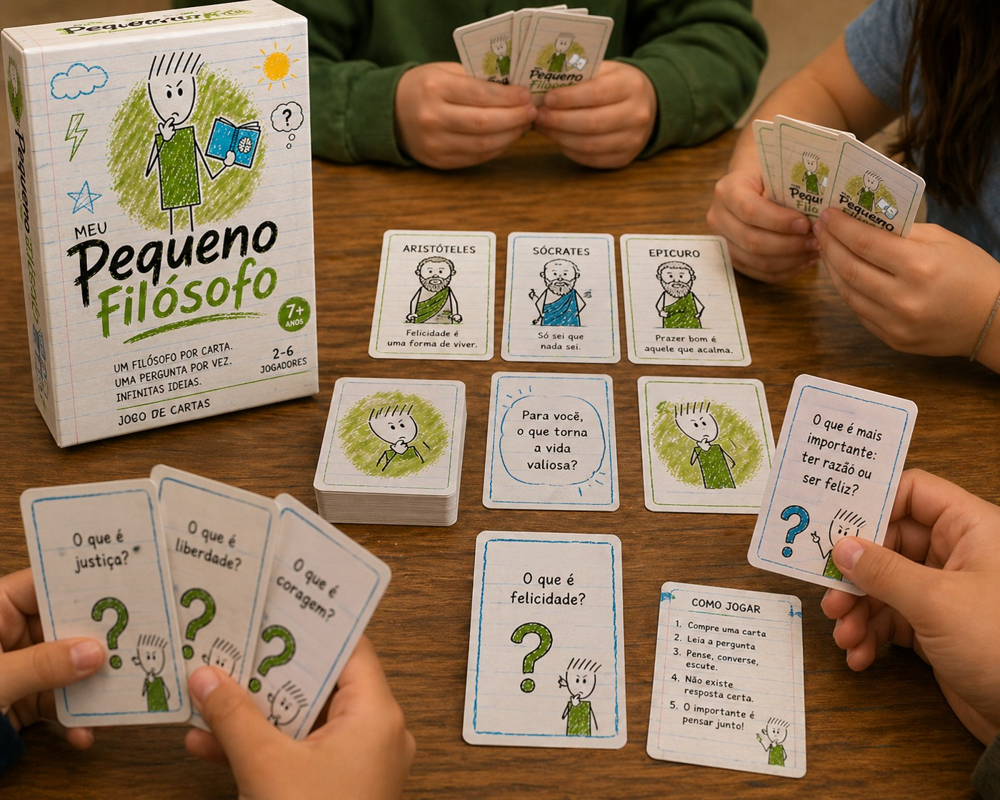
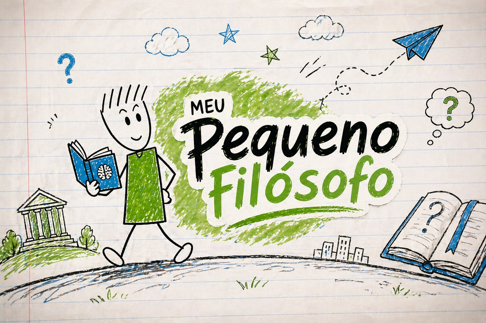
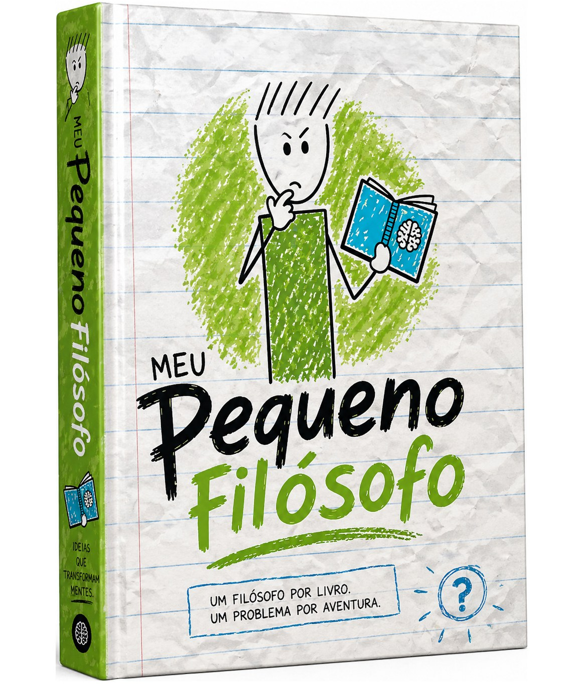
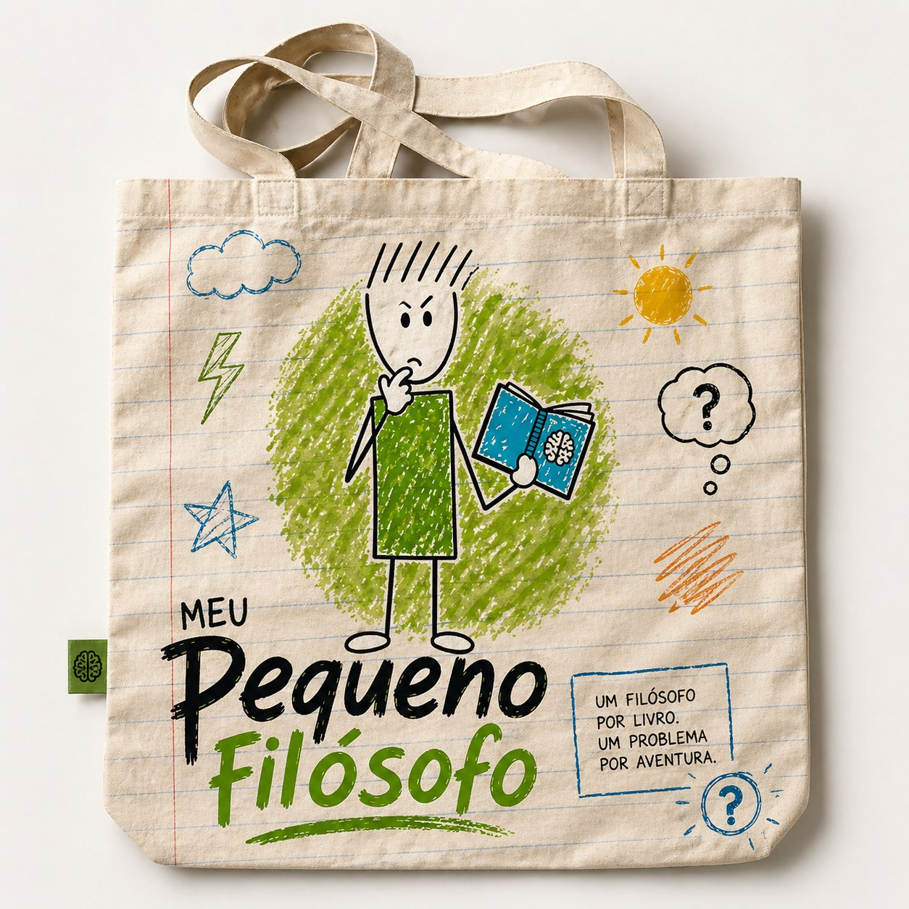
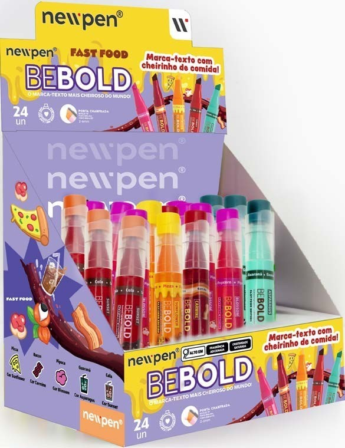
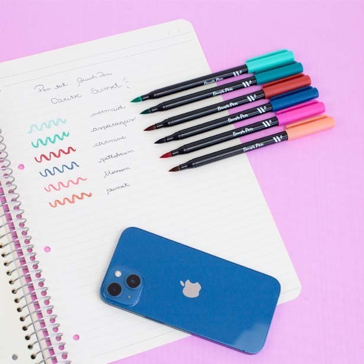

Atenção
O público entende em segundos?
Neuromarketing. Criação. Consultoria.
Book Estratégico Criativo
Neuromarketing. Criação. Movimento.
Projetos que nasceram para organizar pensamento, provocar percepção e dar forma a ideias.
Manifesto ROD
Você não precisa de mais conteúdo. Precisa de uma marca que seja entendida, lembrada e escolhida.
A ROD entra onde o visual sozinho não resolve: no ponto entre intenção, percepção, comportamento e clareza narrativa.
Método
A ROD usa neuromarketing como método para ativar atenção, facilitar entendimento, gerar confiança, construir memória e conduzir decisão.
O público entende em segundos?
A marca ativa uma sensação clara?
A mensagem reduz dúvida ou cria ruído?
Existe algo realmente memorável?
O próximo passo parece óbvio?
Processo
Cases

Case 01



Case 02



Case Newpen
Um recorte de direção criativa para uma linha que usa cor, expressão e presença como linguagem de marca.
Campanha internacional

Display de ponto de venda
Produto em contexto de uso Filme para cinemas de Portugal
Filme para cinemas de Portugal
Rodney Berthault
Gerente de Marketing e publicitário com experiência em branding, neuromarketing, direção criativa, gestão de produtos, campanhas digitais e expansão de mercado.
Este book é um recorte de pensamento, processo e direção criativa.
Conectamos Mentes. Movemos Ideias.